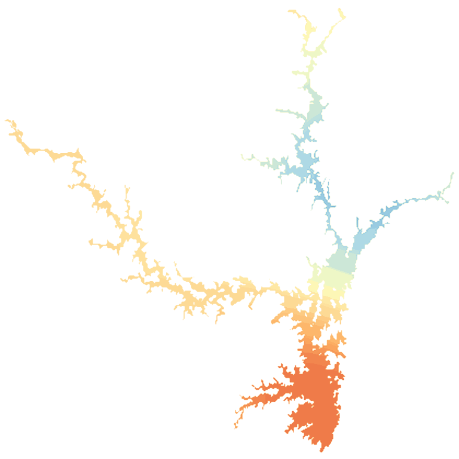

LakeScope › SC
Lake Hartwell today
Updated 2026-11-26 - Atlas Labs
Clear water, 52°F water, level falling, 8 ft below normal, windy Thursday (20 mph WNW).
Water level
646.81 ft
USGS gauge 02187010 - 2026-11-26
7-day trend: falling (-0.45 ft). Compared with normal for this date: -8.3 ft (same weeks, 2016-2025).
Water clarity and algae
Clear water Last clear view: about a week ago. 1 cloudy pass since.
Surface temperature
52°F
seen from space on 2026-11-23

Weather, next 3 days
| Day | Sky | High / low | Wind | Rain |
|---|---|---|---|---|
| Thursday | Light Rain then Cloudy | 53 / 35°F | 20 mph WNW | 83% |
| Friday | Mostly Cloudy | 50 / 33°F | 20 mph WSW | 5% |
| Saturday | Sunny | 60 / 37°F | 13 mph WSW | 0% |
Sunrise 07:15 - sunset 17:21 - Full moon. National Weather Service.
Get the LakeScope app: alerts and the 3-D view of Lake Hartwell